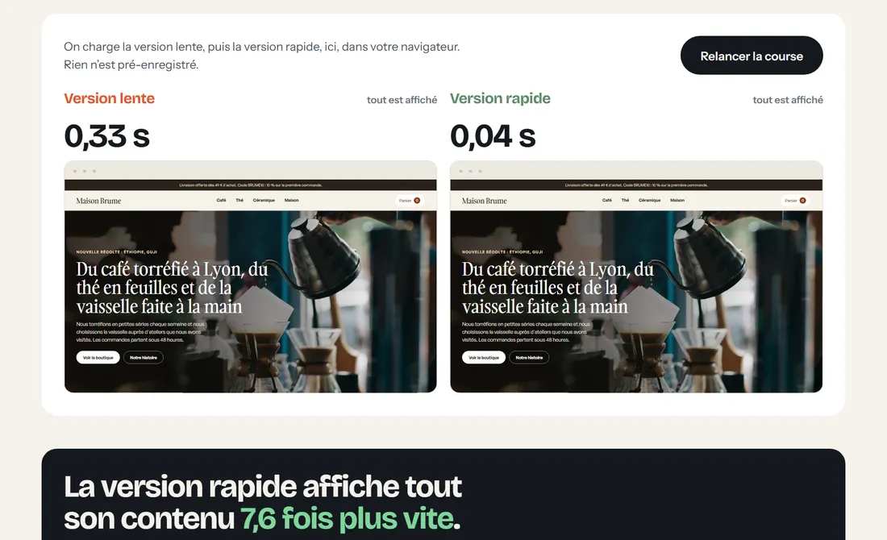
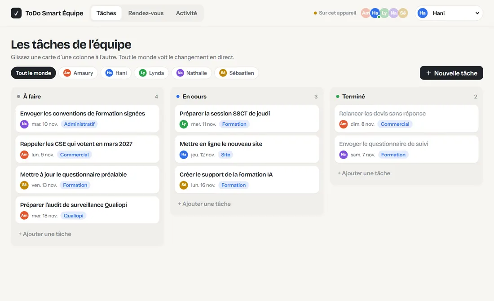
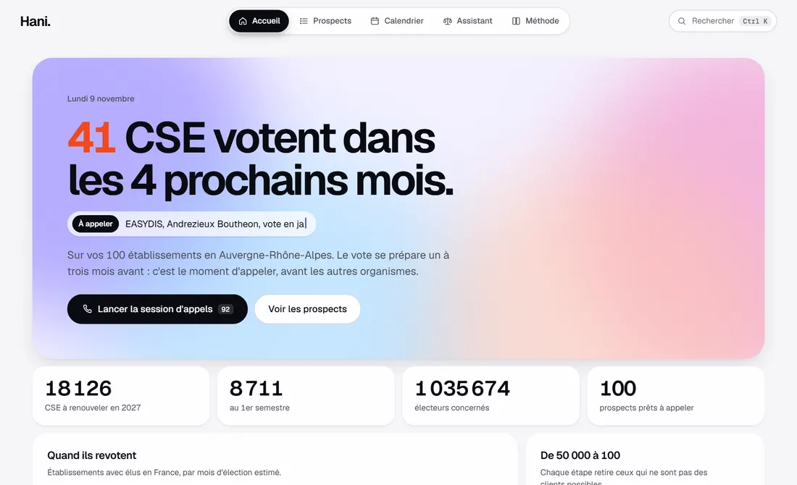
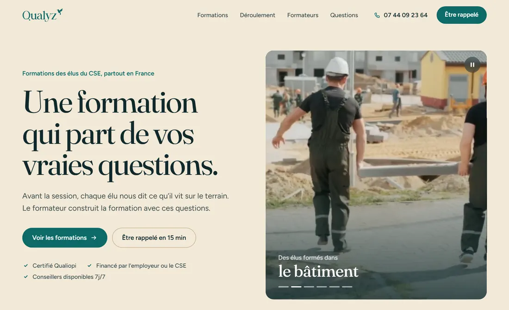

Des projets qui tournent, pas des maquettes.
Tout ce qui est ici fonctionne vraiment : vous pouvez cliquer, tester, comparer. Chaque projet répond à un vrai besoin.
-

Le même site, lent puis rapide
Deux versions d’une boutique, chargées côte à côte. On voit en direct ce que change un travail sérieux sur la vitesse.
Lancer la course -

ToDo Smart Équipe
Les tâches et les rendez-vous d’une équipe au même endroit, synchronisés en direct sur tous les écrans.
Essayer -

Trouver les CSE qui votent en 2027, puis leur écrire
Un outil qui repère les entreprises dont le CSE se renouvelle bientôt, et un système d’emails qui les contacte proprement.
Découvrir -

La refonte du site Qualyz
Une nouvelle version du site, plus claire et plus chaleureuse, dont on peut changer les couleurs, les polices et les sections en direct.
Voir le site
Les projets arrivent dans un instant.
Comment je travaille
- Je pars du besoin réelQui va utiliser l’outil, pour gagner quoi : du temps, des clients, de la sérénité.
- Je code, avec l’IA comme assistantJ’utilise Claude Code pour aller vite. Je relis, je teste et je décide de chaque choix.
- Je vérifie avant de montrerTests automatiques, essais sur ordinateur et téléphone, avis d’un relecteur indépendant.